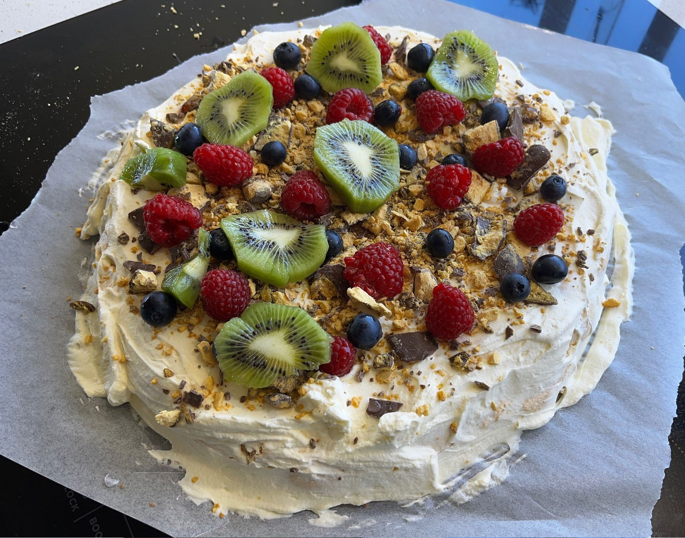

Pavlova

Preheat oven to 150 deg C.
On a tray with baking paper, draw a circle using a small saucepan lid (for getting the shape later).
4eggs
Remove the yolk from eggs, making sure you only have the whites.
Beat egg whites in a bowl until fluffy.
1 1/2 cupssugar
Add sugar, a small amount at a time and beating after each addition.
Continue beating until meringue is thick, white, and glossy.
2 tspcornstarch2 tspvanilla extract2 tsplemon juice
Gently fold in cornstarch, vanilla extract, and lemon juice.
Spoon mixture inside the circle drawn and build the edge slightly so centre is lower.
Bake in the oven until meringue is dry and sounds hollow when tapped, about 45 mins. Leave in oven to cool.
300 mlcream
Beat cream in a bowl and add on top of the meringue.
somefruit
Top with fruit and crushed chocolate.